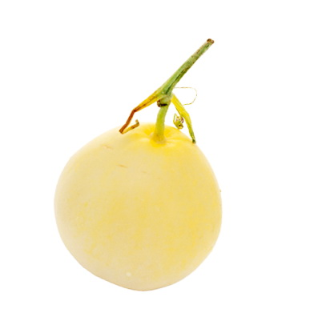
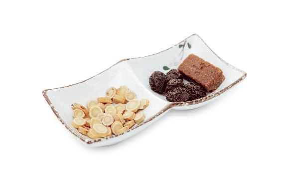
三伏天，天气闷热，人们喝很多的水，容易造成湿热水肿，感觉身体沉重。可以利用夏天常吃的三种瓜，将家里食用之后剩下的瓜皮，顺手煮一壶三瓜饮来喝。
【原料】
新鲜西瓜皮、新鲜冬瓜皮、新鲜黄瓜皮各适量，蜂蜜适量。
【做法】
【功效】
利水消肿。
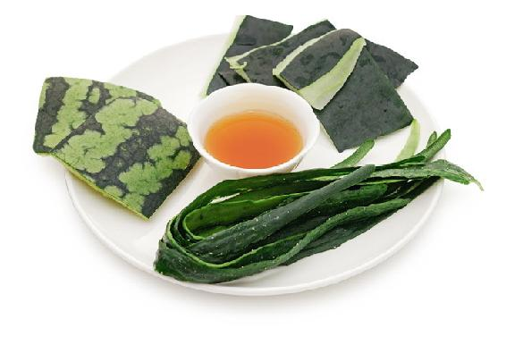
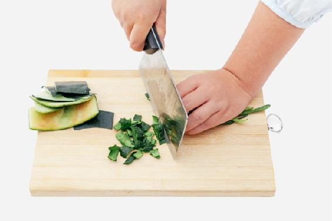
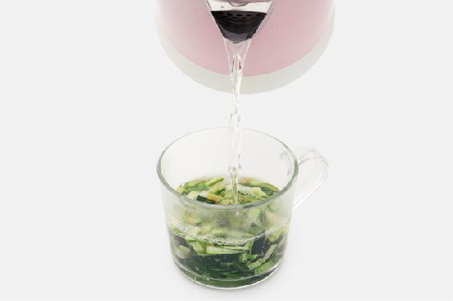
——琳琳
——怒放的生命
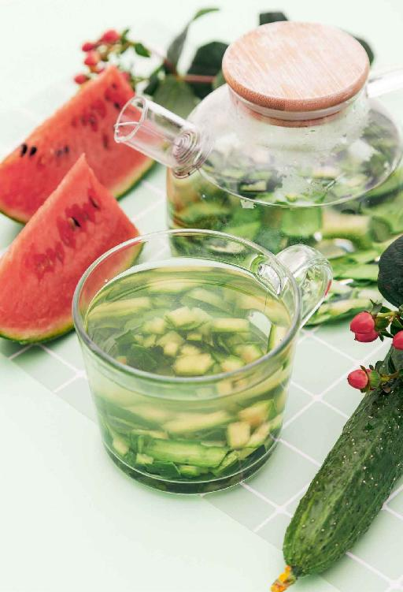
三伏是一年中最热的一段时间，我们的身体会出大量的汗，气也随之而泻，人就会亏气。这时候喝芪枣补气饮来补气效果很好。
【原料】
黄芪500克、大枣500克。
【做法】
【功效】
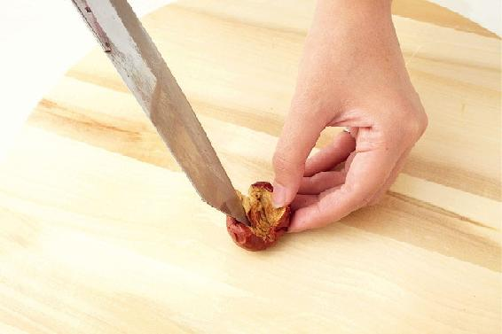
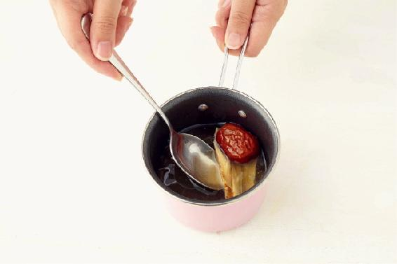
允斌叮嘱
这个茶方适合阳虚的人。体内有热的人，喝芪枣补气饮；上火的人可以喝消暑补气饮。
读者评论
——老郑
——19群读者
——smil3cat
——花非花
—— 夏夏
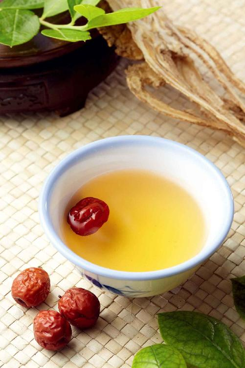
“汗血同源”，夏天大量出汗不仅伤气也会伤血，引起血虚阴虚，使人感觉手脚心发热，睡觉时心烦发热。
这种情况，喝黄芪补气饮时，可以与甘草陈皮梅子汤（见本书103页）一起煮。也可以简化为下面这道消暑补气饮。
【原料】
乌梅200克、黄芪200克、红糖250克。
【做法】
【功效】
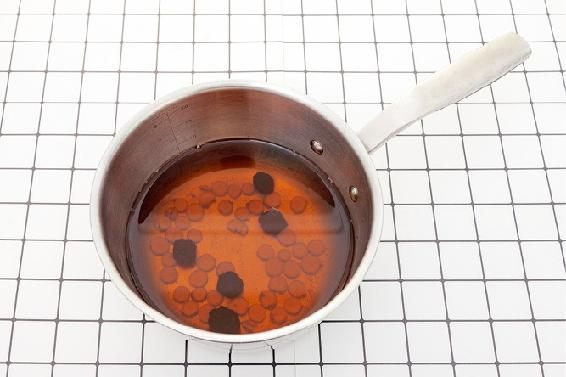
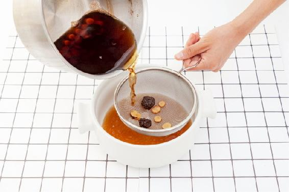
允斌叮嘱
阴阳两虚的人，需要加强清补的效果，用黄芪煮甘草陈皮梅子汤完整配方更佳。梅子汤可以生津止渴、清虚热，防止暑热伤阴，还能调理暑热造成的食欲不振、消化不良。夏天喝酸梅汤，是中国人一个很好的传统养生习惯。
读者评论
——冉冉妈妈
——美丽的丽
——金钥匙
——珠襄
——月半弯
——月也兔
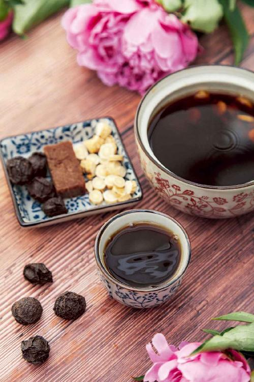
很多人每年秋冬季都会发作慢性支气管炎，这种情况可以在夏天进行冬病夏治。首先要坚持做三伏贴（连续3年），同时可以每天喝一杯瓜香茶，来辅助调理。
【原料】
绿茶适量、香瓜1个。
【做法】
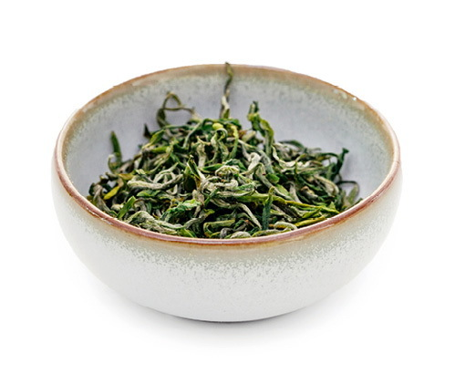
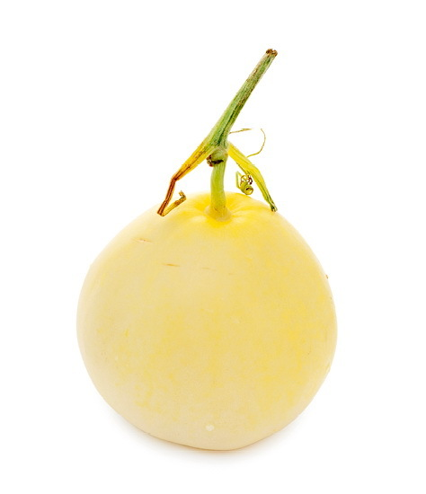
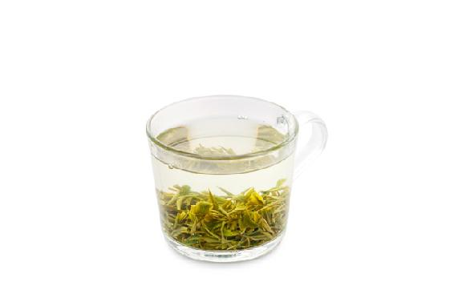
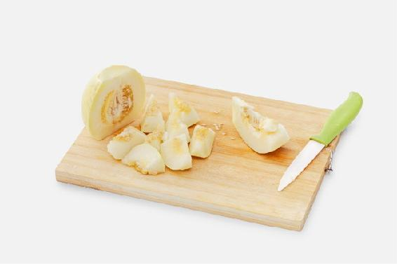
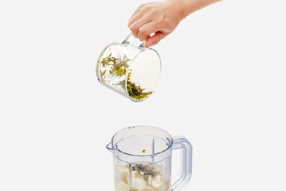
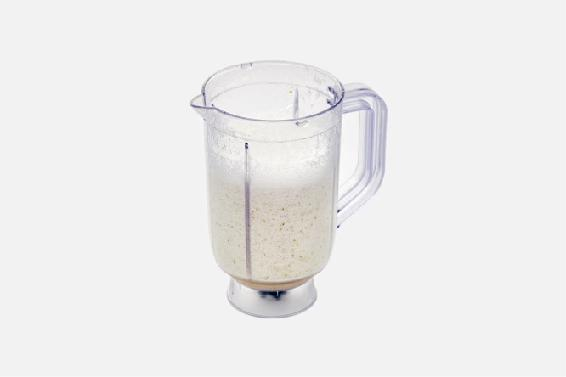
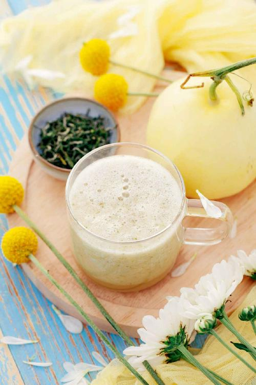